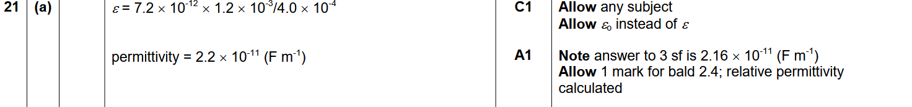
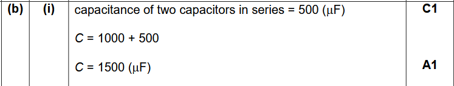
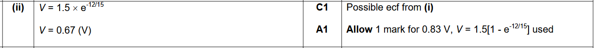

Knowledge required
The capacitance equation
Q=CV
or rearranged:
V=Q/C
On a graph of V (y-axis) against Q (x-axis):
Gradient = ΔV/ΔQ
Since:
V = 1⁄C × Q
The gradient is 1/C
So the gradient is capacitance-1.
Meaning of the area under the graph
Area = 1⁄2 QV
which is the energy stored (or work done charging the capacitor).
Common misconceptions
Students often:
- Think the gradient is the capacitance instead of 1/capacitance.
- Forget that the area under the graph is ½QV, not simply QV.
- Confuse energy stored with power or permittivity.
Model Answer
A
(Exploring, Q7 2017)
Knowledge required
Percentage decrease
- the capacitor loses 5% every second
- his means 95% remains each second
So the multiplier is: 0.95
This is the key idea—do not subtract 5% four times.
Repeated percentage changes (compound decay)
Since the loss happens every second, students use repeated multiplication:
Charge after 4 s=600×(0.95)4
Common misconceptions
Students often:
- Calculate 600−(4×5%)=480 μC (Option C).
This assumes a constant amount is lost each second rather than 5% of the remaining charge.
- Use 600×0.80.
- Forget to use the power (4).
Model Answer
D
(Exploring, Q8 2017)
Knowledge required
Capacitance of parallel plates
C=εA/d
C∝1/d
If plate separation d doubles → capacitance halves
Relationship between charge, voltage, and capacitance
Q=CV
So if Q stays constant, C decreases
Then V must increase (here it doubles)
Electric field between parallel plates
E=V/d
Field depends on voltage and separation. If both V and d double → field stays the same
Effect of changing physical separation
Increasing distance between plates:
- reduces capacitance
- increases potential difference (if charge fixed)
- but does not necessarily change field strength
Model Answer
D
(Exploring, Q9 2017)
Knowledge required
Capacitance equation for parallel plates
C=εA/d
Rearrange to find permittivity:
ε=Cd/A
Unit conversions (very important)
7.2 pF=7.2×10-12 F
1.2 mm=1.2×10−3 m
Area is already in m2, so no conversion needed.
Understanding physical meaning
Permittivity is a property of the insulating material (dielectric)
It affects how much charge a capacitor can store
Substitution accuracy
ε=(7.2×10−12x1.2×10−3)/(4.0×10−4)
ε=2.2x10-11Fm-1
Model Answer

(Exploring, Q21a 2017)
Knowledge required
Capacitors in parallel
Capacitances add directly:
Ctotal=C1+C2...
Each capacitor in parallel has the same potential difference.
Capacitors in series
the reciprocal rule applies:
1/Ctotal=1/C1+1/C2+...
Charge is the same on each capacitor.
Total capacitance is smaller than the smallest capacitor.
Core conceptual understanding
Parallel → capacitance increases.
Series → capacitance decreases.
Capacitor networks behave opposite to resistors in some ways.
Stepwise reduction method
1. Simplify series groups first
2. Then combine parallel groups
3. Work step-by-step until one equivalent capacitance remains
Units
μF (microfarads)
1000 μF=1×10-3F
Common misconception this question targets
Treating capacitors like resistors (very common error)
Adding all capacitors directly without identifying series/parallel structure
Model Answer

(Exploring, Q21bi 2017)
Knowledge required
Charging/discharging of a capacitor in an RC circuit
When a capacitor discharges through a resistor:
- Charge decreases exponentially
- Current decreases exponentially
- Voltage across the capacitor decreases exponentially
Zero initial voltage condition
Key statement:
“There is zero potential difference across the capacitors at t=0”
Interpretation:
- The capacitors are initially uncharged.
- So all the supply voltage is initially across the resistor.
Time constant concept (very important)
τ=RC
The time constant controls how fast voltage/charge changes.
Exponential decay behaviour
Charge: Q=Q0e-t/RC
Current: I=I0e-t/RC
Voltage across resistor: vR=IR
So resistor voltage falls over time as current decreases.
Series RC circuit behaviour
At t=0: Capacitor acts like a short circuit and resistor has full supply voltage
As time increases: Capacitor charges, current decreases and resistor voltage decreases.
Relationship between current and voltage across resistor
Ohm's law: V=IR
To find resistor voltage at t=12s, they need current at that time.
Common misconceptions
- Thinking voltage stays constant across the resistor
- Thinking discharge is linear
- Forgetting that current decreases over time
- Not linking capacitor discharge to resistor voltage via V=IR
Model Answer

(Exploring, Q21bii 2017)